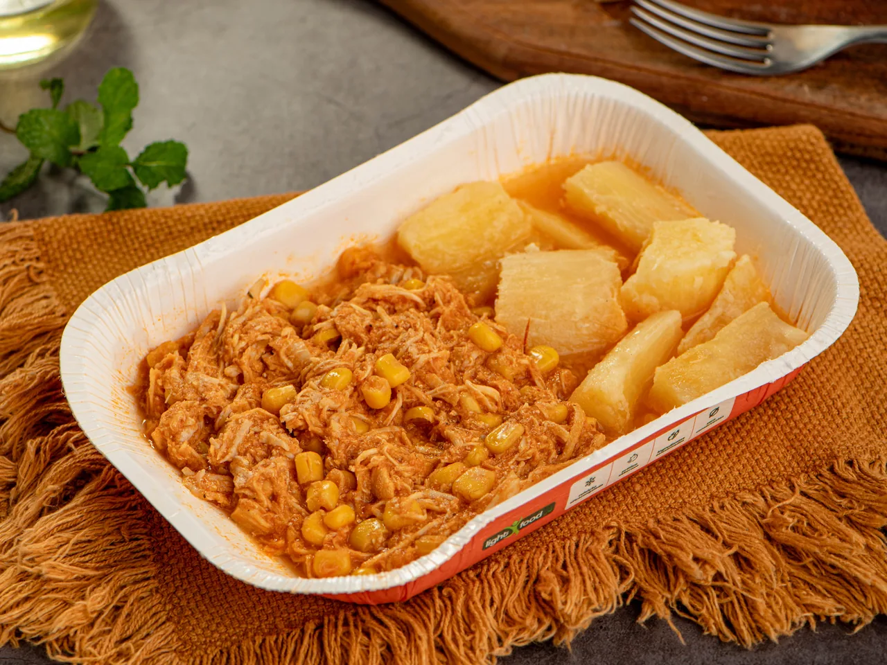
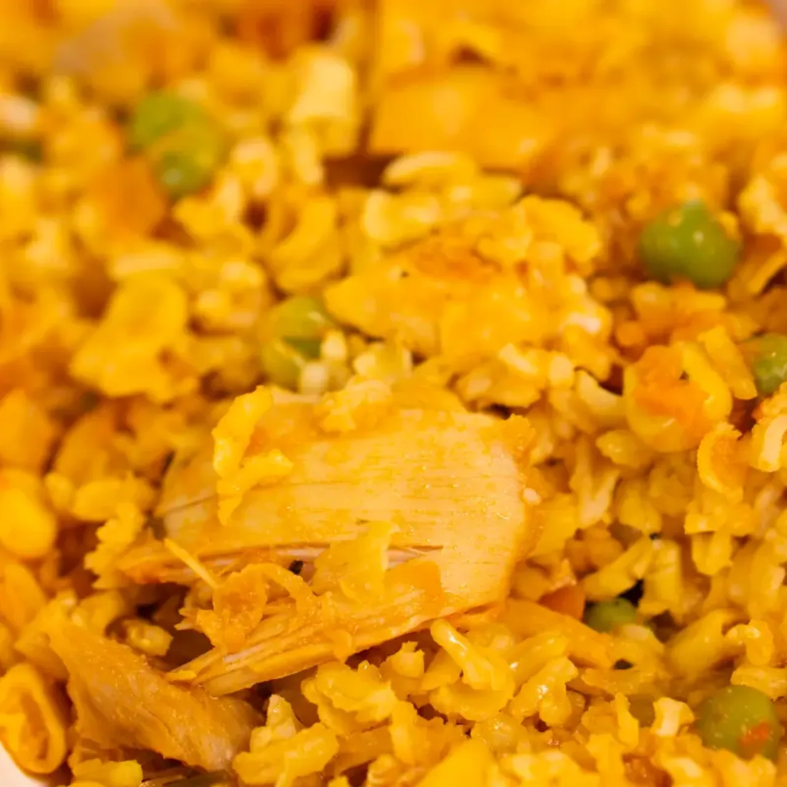
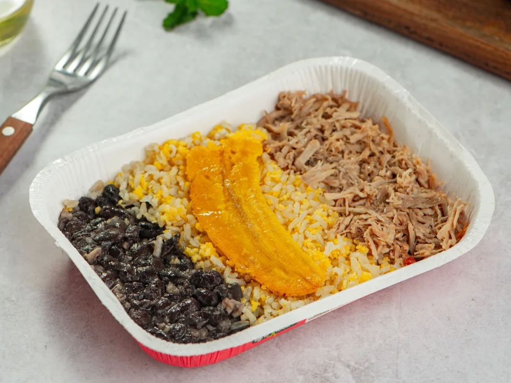
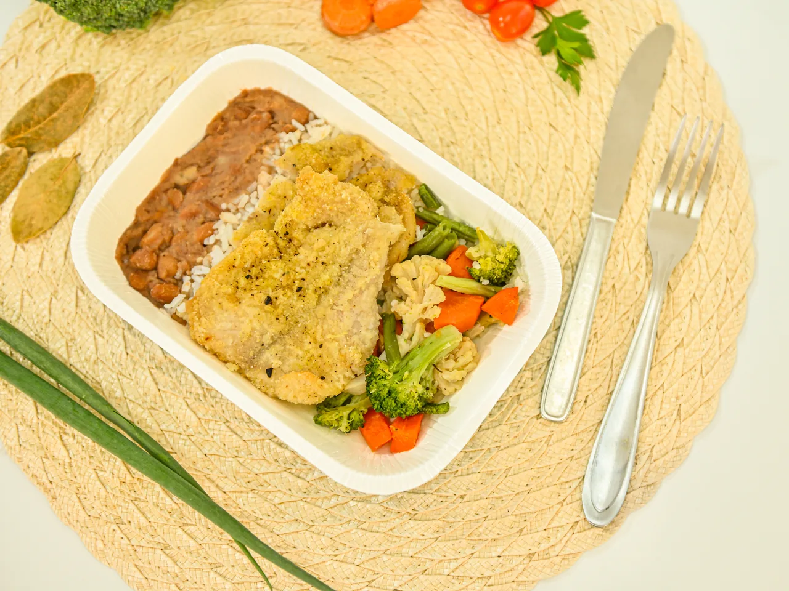
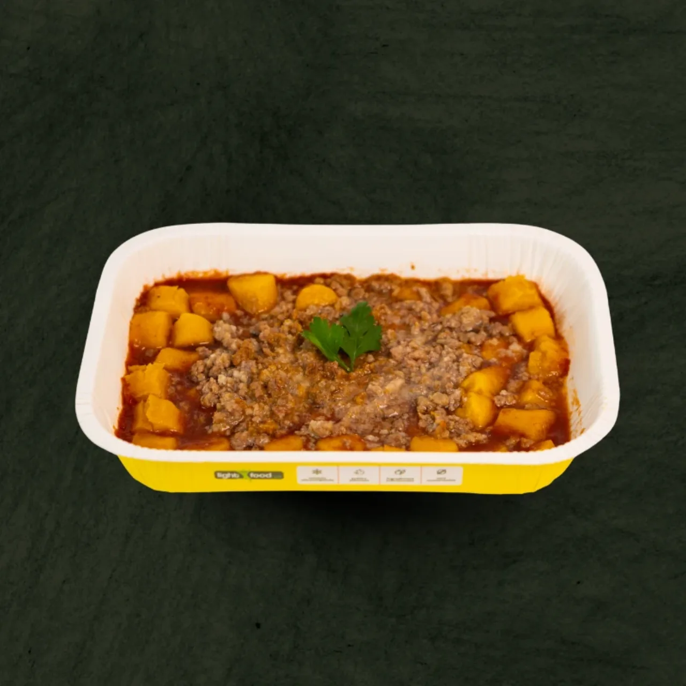
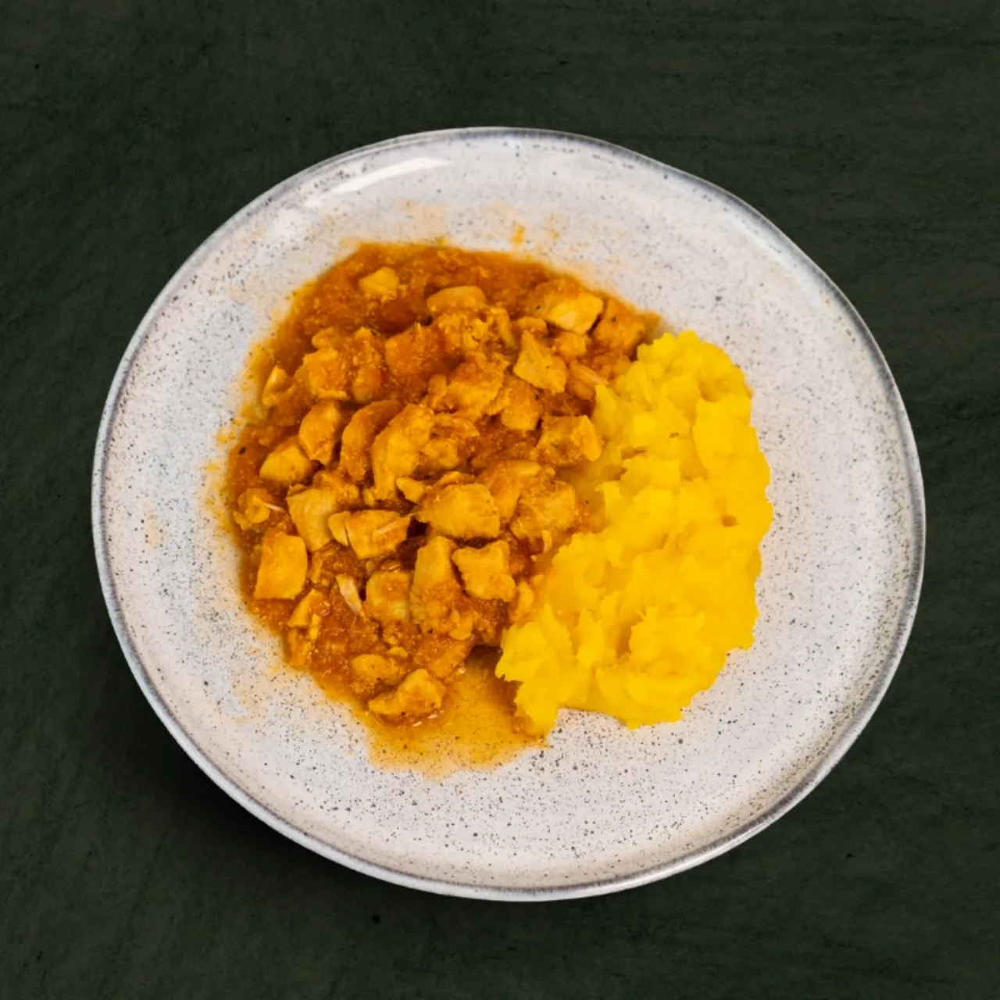
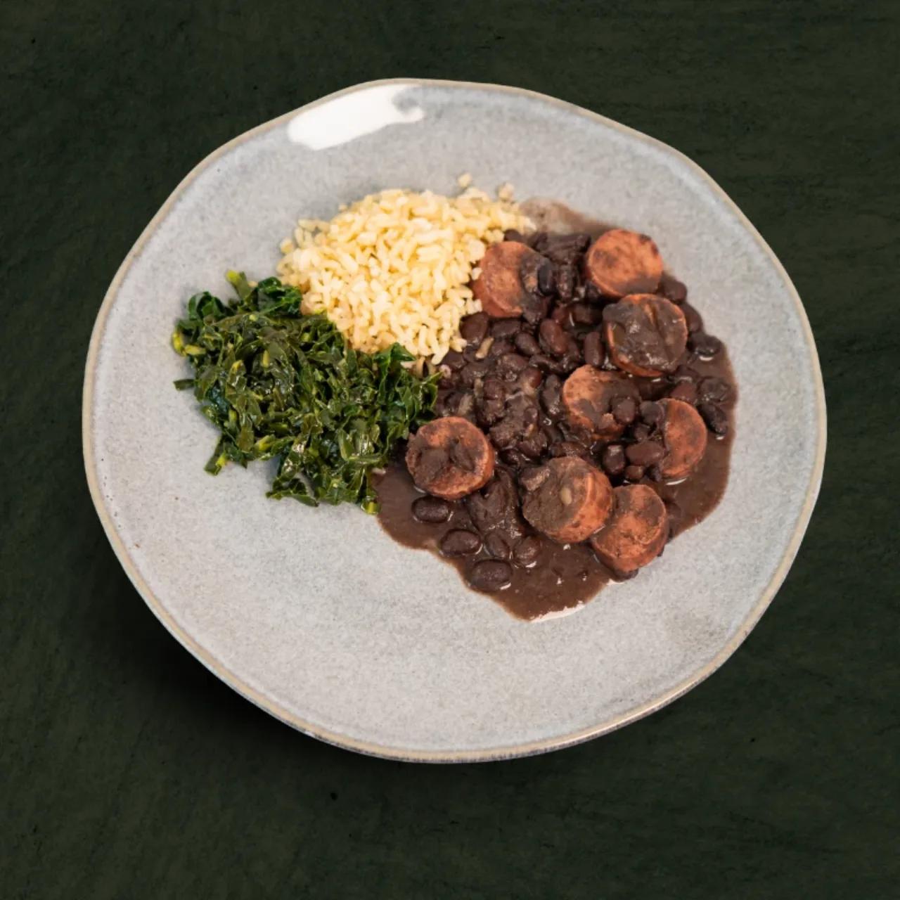
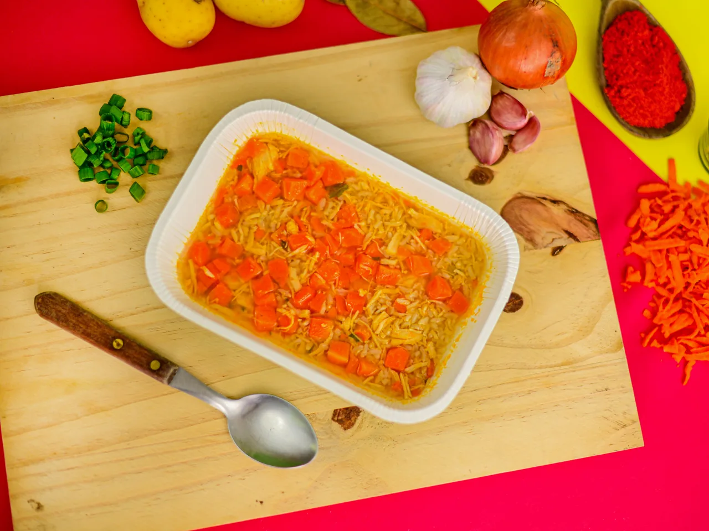

Zero lactose
Nossos produtos são desenvolvidos sem lactose, oferecendo opções para quem busca uma alimentação sem esse componente.
Na Light Food Way, cuidamos de cada etapa para entregar uma experiência que une praticidade, sabor e qualidade.
Nossos produtos são desenvolvidos sem lactose, oferecendo opções para quem busca uma alimentação sem esse componente.
Nosso portfólio é produzido sem glúten, ampliando as possibilidades para diferentes necessidades alimentares.
Nossos produtos não possuem conservantes adicionados.
Nossas refeições passam por um processo de ultracongelamento, diferente do congelamento convencional.
Tenha refeições à disposição para facilitar sua rotina e economizar tempo.
Diversas linhas e sabores para você encontrar opções para diferentes momentos.
A Light Food Way nasceu para tornar a alimentação mais prática para quem vive uma rotina cada vez mais corrida. Criamos refeições para quem quer ter comida de verdade à disposição sem precisar passar horas na cozinha.
São diferentes opções de pratos e linhas para acompanhar diferentes momentos, gostos e estilos de vida. Tudo com a praticidade de ter uma refeição pronta quando você precisar.
Um processo desenvolvido para preservar melhor as características dos alimentos e facilitar a sua rotina.
As refeições Light Food Way passam por um processo de ultracongelamento, no qual a temperatura do alimento é reduzida rapidamente. Esse processo é diferente do congelamento convencional e foi pensado para ajudar a preservar as características do produto, proporcionando praticidade sem abrir mão da experiência de uma boa refeição.
As receitas são preparadas e porcionadas.
A temperatura do alimento é reduzida rapidamente.
O produto é mantido congelado até chegar até você.
Pronta para quando você precisar, no seu tempo.
Da comida caseira às opções para quem treina, encontre uma linha que combina com a sua rotina.

CasaO sabor daquela comida que lembra casa, agora com a praticidade que a sua rotina precisa.
Conhecer Caseirinhos
AvesOpções com frango para deixar suas refeições práticas, saborosas e variadas.
Conhecer linha Frango
CarnesPratos com carne bovina para quem gosta de refeições saborosas e cheias de opções.
Conhecer linha Bovina
Do marOpções com peixe para variar o cardápio com praticidade.
Conhecer linha Peixe
MassasMassas saborosas para transformar uma refeição prática em um momento ainda mais gostoso.
Conhecer Massas
TreinoOpções para quem treina, busca praticidade e quer facilitar a organização das refeições dentro da rotina.
Conhecer linha Maromba
Sem carneOpções sem carne para quem busca variedade e diferentes possibilidades para a alimentação.
Conhecer linha Veggie
QuentinhoUma opção prática e saborosa para aqueles dias em que tudo o que você quer é uma refeição quentinha.
Conhecer SopasEscolha suas refeições, encontre uma unidade e tenha a praticidade da Light Food Way na sua rotina.
Conheça nossas linhas e encontre suas opções favoritas.
Use nosso mapa para localizar a Light Food Way mais próxima.
Consulte o cardápio e escolha o canal de pedido disponível na unidade.
Receba ou retire seu pedido e tenha uma refeição prática e saborosa.
São unidades em diferentes regiões do Brasil. Encontre a mais próxima, conheça a unidade e faça seu pedido.
A Light Food Way acompanha diferentes rotinas — do trabalho ao treino, do estudo ao jantar em casa.
Avaliações de quem já colocou a Light Food Way na rotina.
“Substituí o delivery da semana toda. O sabor é de comida caseira mesmo e eu resolvo o almoço em minutos.”
“A variedade é o que mais me pegou. Dá para comer diferente todo dia sem enjoar e sem cozinhar.”
“Peço pelo WhatsApp da unidade aqui perto e já deixo a semana organizada. Praticidade de verdade.”
Substituir por avaliações e depoimentos reais de consumidores (nome, cidade, nota e texto), priorizando comentários sobre sabor, praticidade, variedade, qualidade e facilidade de pedir.
A Light Food Way nasceu com uma ideia simples: tornar a alimentação mais prática para a vida real. Criamos refeições que unem sabor, variedade e praticidade para acompanhar diferentes momentos da rotina.
Hoje, nossa marca está presente em diferentes regiões do Brasil, levando essa proposta para cada vez mais pessoas.
Encontre uma Light Food Way perto de você e descubra suas próximas refeições favoritas.